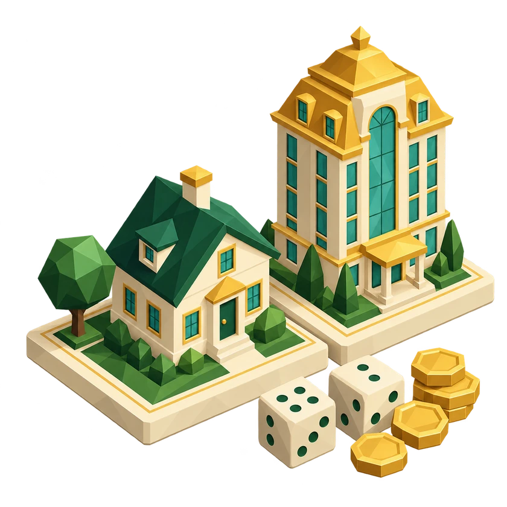
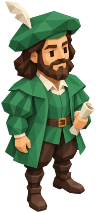
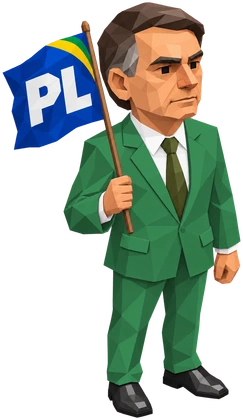

Multiplayer online
Amigos, dados e rivalidade.
Crie uma sala, compartilhe o código e reúna de 2 a 4 jogadores. Cada um escolhe seu personagem e joga no próprio navegador.
Reunir meus amigosJogo de tabuleiro online
Do primeiro terreno ao seu grande império.
Role os dados, construa e faça a sua próxima grande jogada.
Com amigos ou contra o BOT. Sem baixar. Sem cadastro.
Bem-vindo ao CAPITALIST
Um jogo de tabuleiro online de estratégia e imóveis.
Compre estados, invista em construções e transforme cada visita em uma oportunidade.
Casas, hotéis e praias. Evolua suas propriedades, receba aluguéis e cuide do caixa para continuar na disputa.
Cartas de Sorte ou Azar, festivais, Copa do Mundo e viagens pelo tabuleiro. Escolha a sua estratégia e se adapte.
Simples de começar. Bom de disputar.
Percorra o tabuleiro. Cada parada traz uma chance de investir ou um desafio para o seu caixa.
Adquira estados e praias, evolua de casas a hotéis e receba aluguel quando os adversários passarem por lá.
Forme os conjuntos de propriedades exigidos ou chegue ao fim do tempo com o maior patrimônio imobiliário.

Uma mesa cheia de personalidade
Escolha um dos oito personagens e a cor da sua roupa.
A sua cor também identifica as suas construções no tabuleiro.


A próxima partida é sua
Um jogo online para jogar com amigos,
e uma mesa sempre pronta quando você quiser treinar.
Antes de rolar os dados
Conheça a sua próxima partida.
CAPITALIST é um jogo de tabuleiro online grátis de estratégia e gestão de imóveis. Você percorre um tabuleiro com estados e praias, compra propriedades, constrói casas e hotéis e disputa aluguéis e patrimônio com outros jogadores.
Se você gosta de jogos como Monopoly e Banco Imobiliário, vai reconhecer a diversão de rolar dados, comprar terrenos e receber aluguéis. CAPITALIST é um jogo independente, com identidade, tabuleiro brasileiro, personagens e regras próprios, incluindo festivais, Copa do Mundo e objetivos de conquista. Não é uma versão oficial desses jogos.
Clique em Jogar grátis, escolha Criar sala e compartilhe o código. Seus amigos entram pelo mesmo site usando Entrar com código. O multiplayer aceita de 2 a 4 jogadores e o anfitrião inicia a partida quando todos estiverem prontos.
Sim, o CAPITALIST é grátis. O jogo funciona diretamente no navegador, sem download obrigatório e sem cadastro. Para o multiplayer, todos precisam de uma conexão com a internet.
Sim. Escolha Jogar com BOT no menu, selecione seu personagem e sua cor e entre no tabuleiro. O BOT rola os dados, compra, constrói e toma decisões automaticamente.
A duração padrão é de 30 minutos. Nas salas online, o anfitrião pode escolher de 30 a 99 minutos. A partida também pode terminar antes por falência dos adversários ou pela conquista dos objetivos de propriedades.
Sim. A apresentação pode ser vista em qualquer orientação. Para jogar no celular ou tablet, use o aparelho na horizontal e siga o pedido de tela cheia do jogo. Você também pode jogar no computador pelo navegador.
Você pode vencer sendo o último jogador solvente, mantendo os conjuntos exigidos de monopólios ou as quatro praias durante uma rodada dos adversários, ou tendo o maior patrimônio imobiliário ao acabar o tempo. O caixa desempata o resultado por patrimônio.
O tabuleiro está esperando
Grátis. Online. Com a sua cara.